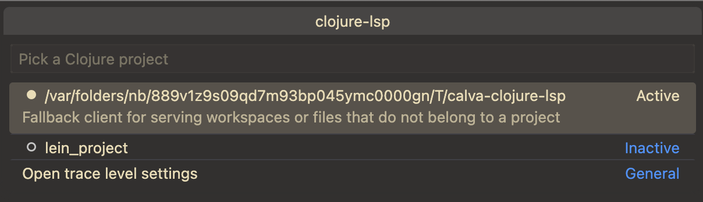
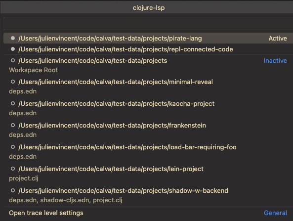
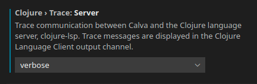

Clojure-lsp#
Calva uses a mix of static and dynamic analysis to power the experience. A lot of the static abilities come from clojure-lsp. This enables you to check something up in a project, with a lot of navigational and contextual support, without starting a REPL for it. (And once you do start a REPL you'll get even more capabilities, enabled by the dynamic analysis.)
Which clojure-lsp does Calva use?
Calva defaults to using the latest clojure-lsp released. To use a different version of clojure-lsp, see the configuration section. Calva does not use the clojure-lsp installed on your system, unless you set the path for clojure-lsp to the installed binary in your settings. You can see what version is being used by running the Clojure-lsp Server Info command, which will also show the version of clj-kondo that's being used as well as other info.
The LSP server lifecycle#
By default you won't need to install/setup anything as Calva handles that for you by automatically downloading the latest clojure-lsp binary. It can take a while for clojure-lsp to start, especially the first time opening a new project, as clojure-lsp (via clj-kondo) indexes the project files.
Calva is able to automatically start the clojure-lsp server for you and can be configured to start the server under various different conditions. These behaviours can be configured through the calva.enableClojureLspOnStart setting, which takes the following options:
- "always-use-first-workspace-root"
- "when-workspace-opened-use-workspace-root"
- "when-file-opened-use-furthest-project"
- "never"
"always-use-first-workspace-root" [default]#
When set to "always-use-first-workspace-root" Calva will attempt to start the clojure-lsp in the root of the first workspace folder if that folder holds a Clojure project (or an open Clojure file). If it does not, Calva skips auto-start so that non-Clojure workspaces are not littered with .lsp and .clj-kondo folders.
This is the default auto-start behaviour.
"when-workspace-opened-use-workspace-root"#
When set to "when-workspace-opened-use-workspace-root" Calva will start the clojure-lsp in the root of all opened vscode workspaces. All Clojure files in a workspace will be serviced by the clojure-lsp server running in that workspace. This behavior requires that you are opening workspaces with a valid Clojure project in the root (the directory must contain a deps.edn, project.clj or shadow-cljs.edn file).
"when-file-opened-use-furthest-project"#
When set to "when-file-opened-use-furthest-project" Calva will attempt to start the clojure-lsp server whenever a Clojure file is opened. The LSP server will be started in the outermost valid Clojure project or will fall back to starting in the workspace root if no valid Clojure project can be found. A directory is considered a Clojure project if it contains typical Clojure project files such as a deps.edn, project.clj, or shadow-cljs.edn file. When working in a mono-repo style project or in a multi-workspace VS Code configuration you may have multiple LSP servers running, one for each independent Clojure project opened.
Opening files that do not belong to a workspace folder
When opening files that do not belong to any of the workspace folders currently open then Calva will fallback to starting the fallback clojure-lsp server
"never"#
When set to "never" Calva will never attempt to automatically start the clojure-lsp server. In this case you are responsible for manually starting the server. More advanced users might want to do this in order to have more control over which projects have a clojure-lsp server running for them. To manually start the clojure-lsp server you can run the calva.clojureLsp.start or the calva.clojureLsp.manage command and pick the project root. You can also click the clojure-lsp status bar icon to open the Management Menu.
Additionally Calva has commands for:
- Inspecting the clojure-lsp server information
- Read the clojure-lsp server log
- Stopping any running clojure-lsp processes
- Starting clojure-lsp
- Restarting any running clojure-lsp processes
- Downloading the configured clojure-lsp version
Note that the download command will download the configured clojure-lsp version regardless if it is already installed or not. This can be useful when some earlier download has failed resulting in that clojure-lsp can't be started. NB: It will not download anything if calva.clojureLspPath is set to something non-blank.
Fallback Server#
As a fallback behaviour Calva may start a clojure-lsp server in a temporary directory and use this to service lsp requests for clojure files that do not belong to a valid clojure project. This will show up in the management menu looking something like:

Any files that are handled by this server will have limited classpath analysis and lsp features. It is therefore recommended to setup your project as a clojure project (by creating a deps.edn file in the root, for example).
Status bar#
In the status bar Calva will show an indicator with the clojure-lsp status. This status will track the currently open project, showing the status (stopped, starting or active) for the relevant clojure-lsp server.
You can click on the status-bar item to open the clojure-lsp management menu which will look as follows:

The menu shows which clojure-lsp servers are active and which are stopped. Selecting a project will allow you to start/stop/restart the server for that project.
Ignoring LSP cache files#
Clojure-lsp stores its project analysis information in your project. Git users can add these lines to their project root directory .gitignore:
.lsp/.cache/
.lsp/sqlite.*.db
Configuration#
For information about how to configure clojure-lsp, see the settings page of the clojure-lsp docs.
Changing the Version of Clojure-lsp Used by Calva#
By default, Calva will use the latest released clojure-lsp. You can change the version of clojure-lsp used by Calva by setting the calva.clojureLspVersion property to a version of clojure-lsp found in its GitHub releases. This can be helpful if you're debugging an issue with clojure-lsp or you want to try out a feature of a new release that Calva does not yet use. However, you must remember to reset this setting in order for Calva to automatically use newer versions of clojure-lsp that are released with new versions of Calva.
Example:
"calva.clojureLspVersion": "2021.04.07-16.34.10"
Special ”version” values
Apart from the actual versions you can use two special values for this setting:
latest: Will download and use the latest stable build of clojure-lsp, when one becomes available. This is the defaultnightly: Will always download and use the latest nightly build, whether there is a new version available or not.
Using a Custom Clojure-lsp#
You can set a path to a custom clojure-lsp to be used by Calva by configuring the calva.clojureLspPath setting. This should be an absolute path to a native binary or JAR file.
Example:
"calva.clojureLspPath": "/usr/local/bin/clojure-lsp"
Will override any calva.clojureLspVersion setting
When calva.clojureLspPath is set, the binary at the path will be used uncoditionally, and the calva.clojureLspVersion setting will be ignored.
Extra commands#
clojure-lsp provides many useful [commands], and Calva has configuration for most of them. The clojure-lsp team works fast and sometimes Calva might miss some command. And Calva's configuration only really work for clojure-lsp commands that take no argument, or where it makes sense to prompt for the argument. Therefore Calva provides a generic command id, clojure-lsp.command which can be used with keyboard shortcuts and that allow for providing arguments that way. (The command can be used from Joyride too, of course.)
When using the command, provide the args as an tuple of [command-name, arguments], where arguments is an array of any arguments after file-uri, row, col which are common for all clojure-lsp extra commands and are provided automatically by Calva, based on active text editor and where the cursor is. It can look like so when binding a shortcut for extract-function:
{
"key": "ctrl+alt+r f",
"command": "clojure-lsp.command",
"args": ["extract-function", ["new-function"]]
},
Note that even though extract-function takes only one argument, you should still provide it via an array.
Troubleshooting#
Viewing the Logs Between the Client and Server#
If something doesn't seem to be working correctly, and you suspect the issue is related to clojure-lsp, a good place to start investigating is the request and response logs between the LSP client and server. In your settings, set clojure.trace.server to verbose, then in the VS Code output tab, select the Clojure Language Client output channel.

It may be helpful to clear the output channel, then perform the action with which you're experiencing a problem, then read through the log for clues or paste the logs into a related issue in the Calva repo.
Server Info Command#
You can run the Clojure-lsp Server Info command to get information about the running clojure-lsp server, such as the version the server being used, the version of clj-kondo it's using, and more. This info is printed to the "Calva says" output channel.
Opening the Server Log File#
You can open the clojure-lsp log file by running the command Calva Diagnostics: Open Clojure-lsp Log File. The log file will only be opened with this command if the clojure-lsp server is running and has finished initializing. If you need to open the file when the server is failing to run or initialize, see the clojure-lsp docs for information on the file location.
Server initialization failed#
If clojure-lsp fails to start with “Server initialization failed” messages, it could be because the path to your project contains non-ASCII characters, or that the system PATH variable has been corrupted. (Or something else, of course.)
See this issue for some findings about it: Issue #2251: Server initialization failed error
Classpath lookup failed#
If you see a message like "Classpath lookup failed when running <command>", it means clojure-lsp could not resolve your project's classpath. This can happen when:
- The shell used by clojure-lsp does not have your build tools on PATH. clojure-lsp runs the classpath command using the system default shell, which may differ from the shell configured in VS Code's terminal. For example, if you manage tools with sdkman or nvm and only configure them in bash/zsh, but the system default shell is PowerShell or cmd, the tools won't be found.
- You use a non-standard project setup. If your project uses an unusual directory layout or build tool configuration, clojure-lsp may not detect it correctly.
To work around this, make sure your build tools (clojure, lein, etc.) are available on the PATH of the shell that clojure-lsp uses. On Windows, this is typically PowerShell or cmd. On macOS/Linux, it is whatever /bin/sh resolves to.
Related#
See also: